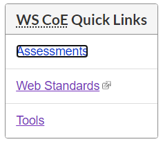

Liens
Fonction du lien
Les lecteurs d’écran permettent aux utilisateurs de parcourir des liens sur une page, en passant de l’un à l’autre sans déclarer le texte avoisinant. Dans la mesure du possible, fournir le texte du lien qui indique la fonction du lien sans avoir besoin de contexte supplémentaire. Selon le Guide de rédaction du contenu de Canada.ca, « Vos liens devraient être descriptifs et pouvoir être autonomes afin que les gens sachent à quoi s’attendre s’ils cliquent dessus.
»
Les personnes ayant une déficience visuelle peuvent également déterminer la fonction d’un lien en explorant le contexte du lien. S’il est impossible de rédiger un texte de lien autonome, assurez-vous que le texte de lien indique sa fonction en combinaison avec l’un des éléments suivants :
- La phrase qui accompagne;
- La liste de pièces jointes;
- Le paragraphe joint;
- La cellule de tableau jointe et la cellule d’en-tête de tableau;
- L'élément de liste parent d’une liste imbriquée (l’exemple suit).
Ne pas utiliser de texte de lien vide comme « Cliquer ici » ou « Lire plus », etc.
Si deux liens ou plus sur la même page ont un texte de lien identique, mais des destinations différentes, vous pouvez les distinguer de trois façons:
- Reformuler le texte du lien.
- Utiliser une étiquette ARIA (l’attribut
aria-labelouaria-labelledby). L’étiquette ARIA remplace le texte du lien natif dans la technologie d’assistance. Assurez-vous d’inclure le texte visible du lien dans l’étiquette ARIA pour que les utilisateurs puissent cibler le lien (voir Activation du lien, ci-dessous). - Ajouter du texte visuellement caché au texte du lien (l’exemple suit).
Lien et bouton
Les développeurs confondent souvent les rôles des liens et des boutons, ce qui transmet la confusion aux utilisateurs des lecteurs d’écran. Les utilisateurs s’attendent à ce que les liens naviguent (d’une page à l’autre ou à l’intérieur d’une page) et à ce que les boutons déclenchent un effet local (ou soumettent un formulaire). L’utilisateur d’un lecteur d’écran peut être désorienté lorsqu’il active un bouton et navigue plutôt vers une nouvelle page ou lorsqu’il active un lien et interprète plutôt un effet de bouton local.
Mauvais exemple : Texte vague du lien
Dans cet exemple, le texte du lien « la quantité » ne communique rien d’utile :
L'exemple commence
Une portion du Guide alimentaire est simplement une quantité de référence. Elle vous aide à comprendre la quantité recommandée chaque jour pour les quatre groupes alimentaires. Dans certains cas, une portion du Guide alimentaire peut se rapprocher de ce que vous mangez, comme une pomme. Dans d’autres cas, comme le riz ou les pâtes, vous pouvez vous servir davantage que la portion du Guide alimentaire.
L'exemple finit
Bon exemple : Texte de lien descriptif
Dans cet exemple, la fonction du lien est parfaitement claire.
L'exemple commence
Le Guide alimentaire sert à déterminer la quantité d’aliments que vous devriez consommer chaque jour dans chacun des quatre groupes alimentaires. Dans certains cas, une portion correspond à la quantité d’un groupe alimentaire donné que vous consommez normalement en une seule fois, comme une pomme. Dans d’autres cas, la quantité quotidienne représente plus d’une portion, comme pour le riz ou les pâtes.
Nombre de portions alimentaires quotidiennes pour les enfants, les adolescents et les adultes
L'exemple finit
Bon exemple : Utilisation d'aria-label pour la fonction du lien
Dans cet exemple, le texte du lien visible « Accès » est répété pour chaque ressource. Lorsqu’il n’y a pas de texte de lien visible en double, vous pouvez distinguer chaque cas avec l’attribut aria-label.
HTML
Début du code
<h1>Outils et ressources</h1>
<h2>Planification d’événements virtuels accessibles – Aide-mémoire</h2>
<p>[Description de la ressource]</p>
<p>
<a href="[...]" aria-label="Planification d’accès aux événements virtuels accessibles – Aide-mémoire">Accès</a>
</p>
<h2>Réseau des employés handicapés (REH)</h2>
<p>[Description de la ressource]</p>
<p>
<a href="[...]" aria-label="Accès au Réseau des employés handicapés">Accès</a>
</p>
Fin du code
Bon exemple : Utilisation d’aria-labelledby pour la fonction du lien
Encore une fois, le texte du lien visible « Accès » est répété pour chaque ressource. Vous pouvez distinguer chaque cas avec l’attribut aria-labelledby en pointant vers une ou plusieurs valeurs d’attribut d'identification des éléments contenant l’étiquette désirée. Dans cet exemple, l’étiquette concatène le texte du lien + l’en-tête précédent.
Veuillez noter qu’une instance du texte du lien « Accès » avec un attribut d'identification peut être référencée par plusieurs étiquettes ARIA, ce qui peut être plus pratique que la création d’un attribut d'identification pour chaque instance du lien « Accès ».
HTML
Début du code
<h1>Outils et ressources</h1>
<h2 id="planning-virtual">lanification d’événements virtuels accessibles – Aide-mémoire</h2>
<p>[Description de la ressource]</p>
<p>
<a id="linktext" href="[...]" aria-labelledby="linktext planning-virtual">Accès</a>
</p>
<h2 id="ewdn">Réseau des employés handicapés (REH)</h2>
<p>[Description de la ressource]</p>
<p>
<a href="[...]" aria-labelledby="linktext ewdn">Accès</a>
</p>
Fin du code
Bon exemple : Utilisation de texte visuellement masqué pour la fonction du lien
Dans cet exemple, le texte du lien en double « Access » est étendu avec du texte qui a été visuellement masqué au moyen de la méthode « clip » CSS. Le texte est invisible, mais il se trouve toujours en langage HTML, de même que la technologie d’assistance.
HTML
Début du code
<h1>Outils et ressources</h1>
<h2>Planification d’événements virtuels accessibles – Aide-mémoire</h2>
<p>[Description de la ressource]</p>
<p>
<a href="[...]">
Accès
<span class="wb-inv">Planification d’événements virtuels accessibles – Aide-mémoire</span>
</a>
</p>
<h2>ERéseau des employés handicapés (REH)</h2>
<p>[Description de la ressource]</p>
<p>
<a href="[...]">
Accès
<span class="wb-inv">Réseau des employés handicapés</span>
</a>
</p>Fin du code
CSS
Début du code
.wb-inv {
clip: rect(1px,1px,1px,1px);
height: 1px;
margin: 0;
overflow: hidden;
position: absolute;
width: 1px;
}Fin du code
Ressources WCAG connexes
Ressources WCAG connexes
Critères de succès
Techniques
- G91 : Fournir un intitulé de lien qui décrit la fonction du lien (en anglais)
- G53 : Identifier la fonction d'un lien en combinant l'intitulé du lien avec le texte de la phrase qui contient ce lien (en anglais)
- H30 : Fournir un intitulé de lien qui décrit la fonction du lien pour un élément anchor (en anglais)
- H77 : Identifier la fonction du lien en combinant l'intitulé du lien avec l'item de liste contenant ce lien (en anglais)
- H78 : Identifier la fonction du lien en combinant le texte du lien avec le paragraphe contenant ce lien (en anglais)
- H79 : Identifier la fonction du lien en combinant l'intitulé du lien avec la cellule de tableau contenant ce lien associée avec les cellules d'en-têtes du tableau (en anglais)
- H81 : Identifier la fonction du lien dans une liste imbriquée en combinant l'intitulé du lien avec l'item de liste parent sous lequel la liste est imbriquée (en anglais)
- ARIA7 : Utiliser aria-labelledby pour la fonction du lien (en anglais)
- ARIA8 : Utiliser aria-label pour la fonction du lien (en anglais)
- C7 : Utiliser les CSS pour masquer une partie du texte du lien (en anglais)
Échecs
- F84 : Échec du critère de succès 2.4.9 consistant à utiliser un lien non spécifique comme « Cliquer ici » ou « Plus » sans mécanisme pour changer le texte du lien pour un texte spécifique (en anglais)
- F89 : Échec du critère de succès 2.4.4, 2.4.9 et 4.1.2 consistant à utiliser un attribut alt vide pour une image qui est le seul contenu d'un lien (en anglais)
Activation du lien
Certaines personnes en situation de handicap ne sont pas en mesure d’utiliser une souris et utilisent plutôt des mécanismes comme le clavier, la reconnaissance vocale et d’autres dispositifs de pointage pour naviguer et interagir avec le Web. Assurez-vous que les liens (ainsi que les boutons et autres commandes) sont réglables et utilisables au moyen d’un clavier et d’une saisie vocale, et non seulement à l’aide d’une souris.
Les liens natifs sont activés au clavier en appuyant sur la touche Entrée. Si vous concevez un lien personnalisé en utilisant l’attribut ARIA role=”link” et un élément div ou span, assurez-vous d'inclure :
- Un attribut
tabindex="0", de sorte que le lien personnalisé reçoit la cible du clavier au moyen de la touche Tab. - Un auditeur d’événement JavaScript pour la touche Entrée pour l'activation, en plus du clic de souris.
Pour activer un lien en utilisant la saisie vocale, l’utilisateur déclare que le nom du lien est visible. Lorsque vous utilisez aria-label ou aria-labelledby pour nommer un lien, assurez-vous que le texte visible du lien correspond à l’étiquette ARIA ou qu'il est inclus dans celle-ci. Sinon, les utilisateurs de saisies vocales ne pourront pas cibler le lien par son nom, ce qui les obligera à passer à des techniques moins efficaces pour activer le lien.
Ressources WCAG connexes
Ressources WCAG connexes
Critères de succès
Techniques
- G202 : Garantir le contrôle par le clavier pour toutes les fonctionnalités (en anglais)
- G90 : Fournir des événements déclenchés au clavier (en anglais)
- SCR20 : Utiliser à la fois des fonctions au clavier et spécifiques à d'autres périphériques (en anglais)
- SCR35 : Rendre les actions au clavier accessibles en utilisant l'événement onclick sur les liens et les boutons (en anglais)
- SCR2 : Utiliser des événements redondants au clavier et à la souris (en anglais)
- G208 : Inclure le texte de l’étiquette visible dans le nom accessible (en anglais)
- G211 : Faire correspondre le nom accessible avec l’étiquette visible (en anglais)
Échecs
- F54 : Échec du critère de succès 2.1.1 consistant à utiliser seulement des événements au pointeur (y compris par geste) pour une fonction (en anglais)
- F42 : Échec du critère de succès 1.3.1 et 2.1.1 consistant à utiliser des événements de scripts pour émuler des liens d'une manière qui n'est pas déterminable par un programme informatique (en anglais)
Indicateur visuel de la cible
Pour les utilisateurs du clavier seulement, le suivi visuel de l’endroit où ils se trouvent dans une page peut être difficile. Les utilisateurs de souris peuvent parcourir la page et recevoir deux indices au sujet des éléments exploitables : la flèche de la souris se transforme en une main lorsque le curseur passe au-dessus d’un élément pouvant être exploité, et l’élément affiche son état « survol » pour indiquer qu’il est accessible (p. ex., un soulignement apparaît sous un lien).
Habituellement, les utilisateurs du clavier appuient sur la touche Tab pour naviguer dans les éléments interactifs d’une page Web (liens, boutons, champs de formulaire, commandes personnalisées).
- La tabulation vers un élément lui donne la « cible » du clavier, auquel moment il peut être activé avec le clavier. Voir la section Cible et ordre de cible plus loin dans ce module.
- Les utilisateurs de clavier voyants ont besoin d’une rétroaction visible de l’état de la cible d'une commande.
Les navigateurs Web fournissent un indicateur visuel de la cible par défaut qui varie en apparence selon le navigateur, mais qui consiste habituellement en une bordure ou un contour autour de l’élément ciblé.
- Évitez toujours les styles qui éliminent ou limitent la visibilité des indicateurs de cible du clavier. L’indicateur visuel de la cible par défaut du navigateur peut être supprimé avec CSS
outline:0ououtline: none, ce qui est une barrière commune et un anti-pattern. - Sa pratique exemplaire consiste à utiliser CSS pour concevoir un indicateur de cible très visible avec un fort contraste.
Mauvais exemple : Suppression de l’indicateur visuel de la cible
Tous les navigateurs affichent un contour visible autour de l’élément qui a actuellement cible de clavier et qui peut être désactivé en utilisant la propriété CSS outline: 0 ou outline: none. Si l’indicateur visuel de la cible est supprimé, les utilisateurs du clavier voyants n’auront aucune idée du lien qui a la cible, ce qui rend difficile ou impossible la navigation dans la page Web.
CSS
Début du code
a:focus {
outline: none;
}Fin du code
Bon exemple : Indicateur visuel de la cible du site Canada.ca
Dans cet exemple, le premier lien d’un menu de trois comporte un indicateur visuel de la cible composé d’un contour noir épais, fixé étroitement au texte.
CSS
Début du code
a:focus {
outline: 2px auto -webkit-focus-ring-color;
outline-offset: -2px;
}
Fin du code
Ressources WCAG connexes
Ressources WCAG connexes
Critères de succès
Techniques
- G149 : Utiliser des composants d'interface utilisateur qui sont mis en évidence par l'agent utilisateur lorsqu'ils reçoivent le focus (en anglais)
- G165 : Utiliser l'indicateur par défaut du focus de la plateforme de sorte que l'indicateur par défaut du focus à haute visibilité soit visible (en anglais)
- G195 : Utiliser un indicateur de focus à haute visibilité fourni par l'auteur (en anglais)
- C15 : Utiliser les CSS pour changer la présentation des composants d'interface utilisateur lorsqu'ils reçoivent le focus (en anglais)
- C40 : Créer un indicateur de focalisation à deux couleurs pour assurer un contraste suffisant avec tous les composants (en anglais)
- SCR31 : Utiliser des scripts pour changer la couleur d'arrière-plan ou la bordure de l'élément ayant le focus (en anglais)
Échecs
Distinguer les liens du texte
Les utilisateurs malvoyants et daltoniens ont besoin de faire la distinction entre les liens et le texte voisin. La façon la plus simple de le faire consiste à souligner le lien.
Lorsque la couleur est utilisée comme seule façon d’identifier un lien (ce qui signifie que le soulignement a été supprimé), deux conditions doivent être remplies :
- Contraste de 3:1 entre le corps du texte et le texte du lien.
- Un « indice visuel » (pas seulement un changement de couleur) qui apparaît sur le survol de la souris et la cible de clavier. La façon la plus courante d’y arriver est de souligner le lien sur le survol et la cible, mais vous pouvez aussi fournir une couleur d’arrière-plan, ou une bordure ou un contour.
Notez qu’il s’agit d’un problème uniquement lorsque le lien et le corps du texte apparaissent ensemble. Cela ne s’applique pas aux liens dans l’en-tête ou superposés dans un menu, où ils sont interprétés comme des liens par leur position sur la page.
Ces exigences s’ajoutent à l’exigence minimale de contraste des textes de 4,5:1 (voir le module du tutoriel 7 Conception visuelle et couleurs > Contraste). Il peut être difficile de trouver une couleur de lien qui présente un contraste de 3:1 avec le corps noir et un contraste de 4,5:1 avec un fond blanc. La technique WCAG G183 énumère les valeurs de couleur qui le sont dans l’exemple 1 (voir Ressources WCAG connexes, ci-dessous).
Ressources WCAG connexes
Ressources WCAG connexes
Critères de succès
Techniques
- G182 : S'assurer que des indices visuels additionnels sont disponibles quand les différences de couleur sont utilisées pour véhiculer une information (en anglais)
- G183 : Utiliser un rapport de contraste de 3 pour 1 avec le texte environnant et fournir des indices visuels additionnels au focus pour les liens et les composants d'interface quand ils ne sont identifiables que par la couleur (en anglais)
Liens qui s’ouvrent dans une nouvelle fenêtre
Les liens s’ouvrent dans une nouvelle fenêtre via l’attribut target=”_blank”.
En général, évitez d’ouvrir des liens dans une nouvelle fenêtre. Lorsque les liens s’ouvrent dans une nouvelle fenêtre, avertissez les utilisateurs. Soit en :
- Ajoutant le lien visible « (Ouvre une nouvelle fenêtre) ».
- Affichant un avertissement visuel caché sur la cible et le survol (voir exemple).
Bon exemple : Le lien d’avertissement s’ouvre dans une nouvelle fenêtre en affichant un message visuellement caché sur la cible et le survol.
HTML
Début du code
<p>
Voici un exemple d’un
<a class="info" href="[...]" target="_blank">
<strong>Lien externe</strong>
<span>Ouvre une nouvelle fenêtre</span>
</a>
</p>
Fin du code
Jusqu’à ce que le lien reçoive la cible, la portée intérieure est masquée visuellement au moyen de la méthode « clip » CSS. Sur le survol ou la cible, l’avertissement “Ouvre une nouvelle fenêtre
” (ou “Ouvre un nouvel onglet
”) est affiché. Voir la technique WCAG G201 pour obtenir les versions HTML et CSS complètes.
Songez à styliser l’avertissement pour qu’il apparaisse comme l’infobulle de l'attribut title.